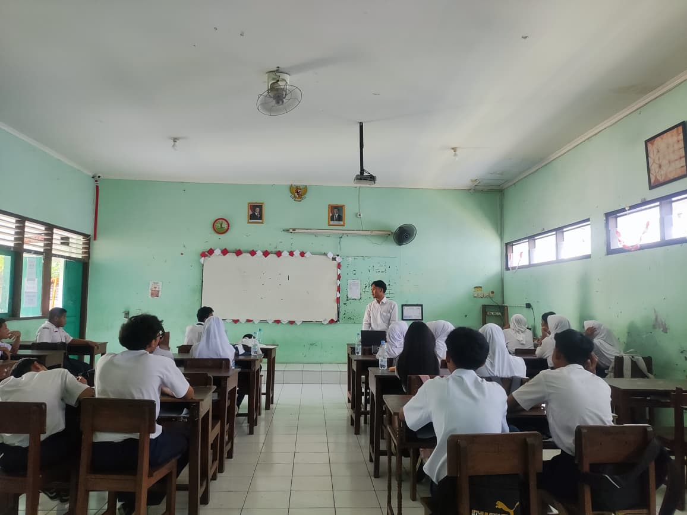
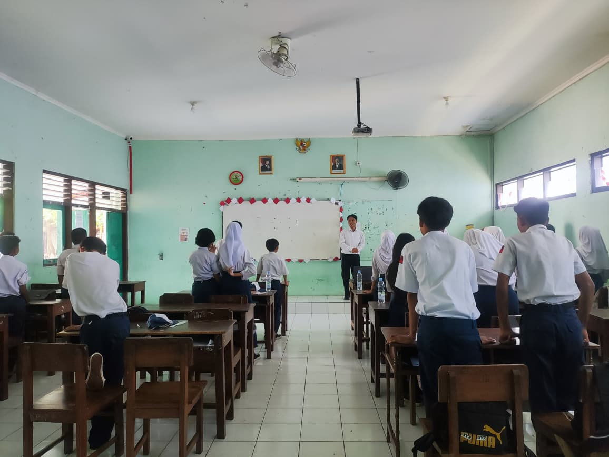
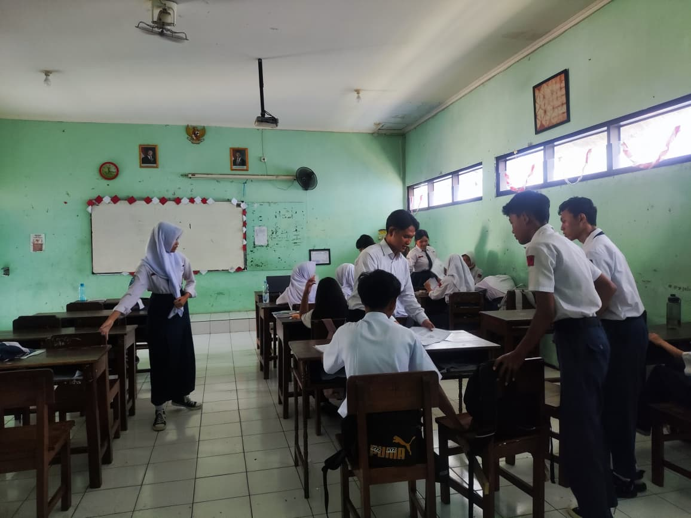

Materi Membangun Empati: STOP CYBERBULLYING (Fase D)
Modul ajar kelas VII ini berfokus kuat pada penanaman nilai karakter (Profil Pelajar Pancasila). Tujuannya agar siswa tidak hanya mengenali bentuk-bentuk perundungan maya, tetapi juga memahami dampak fatal pada psikologis korban, serta menguasai 4 resolusi bela diri digital (jangan balas, simpan bukti, blokir, laporkan).
Pendekatan yang digunakan dalam modul ini sangat kental dengan Teori Belajar Humanistik (Carl Rogers & Abraham Maslow). Pembelajaran tidak hanya menjejali kognitif siswa dengan hafalan definisi, melainkan difokuskan pada "memanusiakan manusia" melalui penumbuhan sikap empati terhadap korban perundungan.
Integrasi sintaks PBL (memecahkan kasus) berfungsi memfasilitasi perkembangan penalaran moral siswa, sehingga mereka terlatih untuk bertindak sebagai upstander (pembela) alih-alih bystander (penonton pasif) di ruang siber.
Presentasi Visual Bentuk & Dampak Cyberbullying
Media presentasi ini difungsikan untuk memvisualisasikan jenis-jenis cyberbullying spesifik (seperti Harassment, Denigration, Exclusion) dan 4 langkah konkrit untuk menghadapinya (Block & Report), serta memuat slogan penutup "Think Before You Post".
Dalam mendesain media ajar ini, diterapkan Prinsip Keterpaduan dan Prinsip Koherensi (Teori Multimedia Mayer). Tidak ada teks panjang yang membingungkan (*extraneous load*). Pesan difokuskan pada kata kunci (*Harassment, Exclusion*) beserta gambarnya.
Keberadaan kutipan reflektif di akhir salindia ("Re-think Before You Comment") bertindak sebagai proses internalisasi nilai-nilai karakter (pembelajaran afektif) sesuai dengan tujuan Pendidikan Karakter Nasional.
Aktivitas Canvas-Style: Klasifikasi & Studi Kasus Meme Roni
LKPD dirancang dengan gaya visual Canvas. Berisi 3 tantangan: Klasifikasi "Pilah-pilih Jempol", Pemetaan Dampak Emosi, dan penyelesaian Studi Kasus konkret tentang Roni yang dijadikan bahan candaan (Meme Futsal) oleh teman-temannya di grup WA.
Struktur LKPD ini merupakan wujud nyata dari Contextual Teaching and Learning (CTL). Kasus pengeditan foto Roni menjadi "Meme Ejekan" adalah situasi riil (*authentic problem*) yang ditarik ke dalam kelas agar pembelajaran bermakna.
Aktivitas kelompok pada bagian "Aksi Penyelamatan Sahabat" menerapkan prinsip Zone of Proximal Development (Vygotsky). Siswa saling bertukar peran dan ide (peer-scaffolding) untuk menemukan solusi terbaik menghentikan rantai cyberbullying tersebut.


